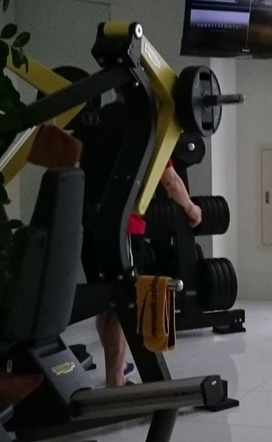
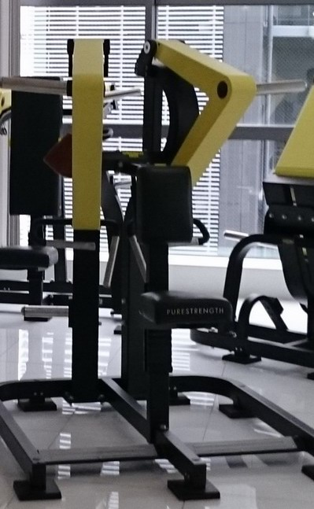
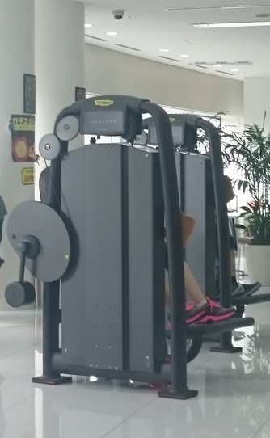
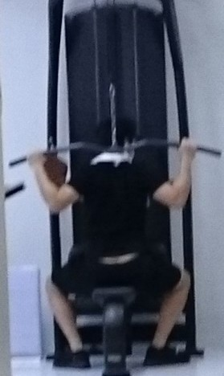
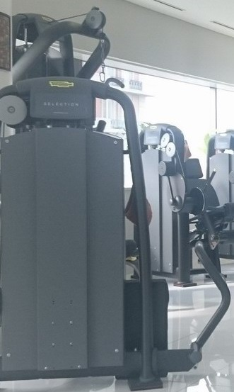
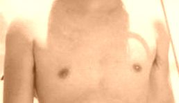
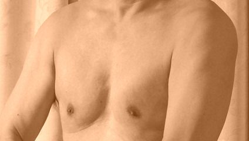
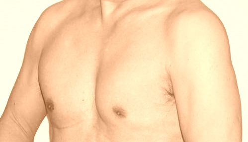

筋肉トレーニング
2016年2月27日
元々運動嫌いではあったが健康を考え2014年3月より近所のスポーツクラブに行くことにした。いろいろな機械（道具）を試したが2016年2月時点で下記のようなプログラム（休憩取りながら約2時間）になった。ウエイトトレーニングにおいて、最初は50kgより開始したが少し重たいものを持つと肩が痛くなったり、腰を痛めたりし、一歩前進二歩交代を繰り返しながら70kgまで増やすも最近は手の平が痛くなり65kgでトレーニングしている。
1a) ウエイトトレーニング（両腕で押す）： 60Kg10回、1分休憩、65kg10回、1分休憩、60kg10回
1b) ウエイトトレーニング（片腕毎に引っ張る）： 60Kg10回、1分休憩、65kg10回、1分休憩、60kg10回
2) 腹筋運動： 40Kg10回、1分休憩、42.5kg10回、1分休憩、40kg10回
3) 懸垂、両腕での引張り: 懸垂10回、1分休憩、頭後ろへ引張40Kg10回、1分休憩、顔前に引張40kg10回
4) 腕水平方向に外から中へ: 40Kg10回、1分休憩、42.5kg10回、1分休憩、40kg10回
5) 足筋肉: 35Kg10回、1分休憩、35kg10回、1分休憩、35kg10回
6) 歩行: 200Kcal消費（時速6.5km/hで約40分歩行）
7) 自転車：100kcal消費（約20分）
トレーニング機械の写真
 |
 |
 |
| 上記１a）の機械 |
上記１b）の機械 |
上記 2）の機械 |
 |
 |
|
上記 3）の機械
筋肉の変化
|
手前 4）、奥 5)の機械
|
|
 |
 |
 |
| 1988年8月の写真 |
2015年9月の筋肉 |
2016年2月の筋肉 |
週3回のトレーニングの結果、体重はほぼ同じであるが、胸、肩、腕に相当な筋肉が付いてきた。開始前の写真がないのは残念であるが昔ハワイへ旅行したときの写真があったので参考になりそう。最近の筋肉の付き方を見ていると何か体まで元気になっているような気持になる！
2020年2月時点の運動メニュー
1b) ウエイトトレーニング（片腕毎に引っ張る）： 55Kg10回、1分休憩、55kg10回、1分休憩、55kg10回
1c) ウエイトトレーニング（仰向けに寝て両手で持ち上げる）45Kg10回、1分休憩、50Kg10回 x2、1分休憩、45Kg10回
2) 腹筋運動： 40Kg10回、1分休憩、40kg10回、1分休憩、40kg10回
4) 腕水平方向に外から中へ: 40Kg10回、1分休憩、40kg10回、1分休憩、40kg10回
5) 足筋肉: 35Kg15回、1分休憩、35.5kg15回
6a) 歩行: 150Kcal消費（時速5.8km/hで約25分歩行）
6b) ジョギング 150Kcal消費（時速7.6Km/hを20Kcal分走行、時速4.3Km/hを10Kcal分歩行を4回繰り返し、時速9Km/hを10Kcal分走行、時速4.3Km/hを10Kcal分歩行を2回繰り返す）
7) 自転車：100kcal消費（約20分）
戻る